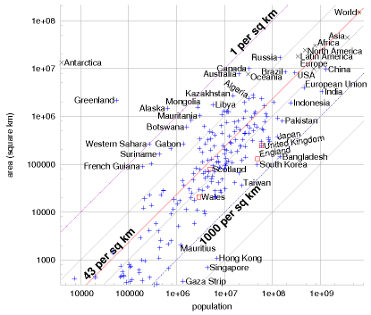
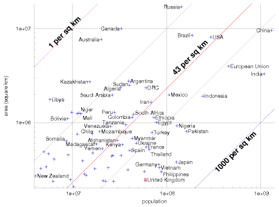
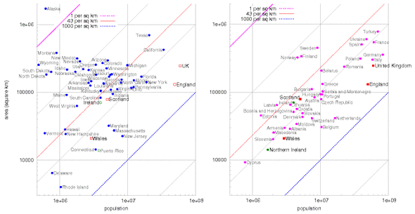

J Populations and areas
Population densities
Figure J.1 shows the areas of various regions versus their populations. Diagonal lines on this diagram are lines of constant population density. Bangladesh, on the rightmost-but-one diagonal, has a population density of 1000 per square kilometre; India, England, the Netherlands, and Japan have population densities one third that: about 350 per km2. Many European countries have about 100 per km2. At the other extreme, Canada, Australia, and Libya have population densities of about 3 people per km2. The central diagonal line marks the population density of the world: 43 people per square kilometre. America is an average country from this point of view: the 48 contiguous states of the USA have the same population density as the world. Regions that are notably rich in area, and whose population density is below the average, include Russia, Canada, Latin America, Sudan, Algeria, and Saudi Arabia.
Of these large, area-rich countries, some that are close to Britain, and with whom Britain might therefore wish to be friendly, are Kazakhstan, Libya, Saudi Arabia, Algeria, and Sudan.

Figure J.1. Populations and areas of countries and regions of the world. Both scales are logarithmic. Each sloping line identifies a population density; countries with highest population density are towards the lower right, and lower population densities are towards the upper left. These data are provided in tabular form below.

Figure J.2. Populations and areas of countries and regions of the world. Both scales are logarithmic. Sloping lines are lines of constant population density. This figure shows detail from figure J.1 (p338). These data are provided in tabular form below.
| Region | Population |
Land area (km2) |
People per km2 |
Area each (m2) |
|---|---|---|---|---|
| World | 6 440 000 000 | 148 000 000 | 43 | 23 100 |
| Asia | 3 670 000 000 | 44 500 000 | 82 | 12 100 |
| Africa | 778 000 000 | 30 000 000 | 26 | 38 600 |
| Europe | 732 000 000 | 9 930 000 | 74 | 13 500 |
| North America | 483 000 000 | 24 200 000 | 20 | 50 200 |
| Latin America | 342 000 000 | 17 800 000 | 19 | 52 100 |
| Oceania | 31 000 000 | 7 680 000 | 4 | 247 000 |
| Antarctica | 4 000 | 13 200 000 |
Table J.3. Population densities of the continents. These data are displayed graphically in figures J.1 and J.2. Data are from 2005.

Figure J.4. Populations and areas of the States of America and regions around Europe.
Region
Population
Area (km2)
People per km2
Area per person (m2)
Afghanistan
29 900 000
647 000
46
21 600
Africa
778 000 000
30 000 000
26
38 600
Alaska
655 000
1 480 000
0.44
2 260 000
Albania
3 560 000
28 700
123
8 060
Algeria
32 500 000
2 380 000
14
73 200
Angola
11 100 000
1 240 000
9
111 000
Antarctica
4 000
13 200 000
Argentina
39 500 000
2 760 000
14
69 900
Asia
3 670 000 000
44 500 000
82
12 100
Australia
20 000 000
7 680 000
2.6
382 000
Austria
8 180 000
83 800
98
10 200
Bangladesh
144 000 000
144 000
1 000
997
Belarus
10 300 000
207 000
50
20 100
Belgium
10 000 000
31 000
340
2 945
Bolivia
8 850 000
1 090 000
8
124 000
Bosnia & Herzegovina
4 020 000
51 100
79
12 700
Botswana
1 640 000
600 000
2.7
366 000
Brazil
186 000 000
8 510 000
22
45 700
Bulgaria
7 450 000
110 000
67
14 800
CAR
3 790 000
622 000
6
163 000
Canada
32 800 000
9 980 000
3.3
304 000
Chad
9 820 000
1 280 000
8
130 000
Chile
16 100 000
756 000
21
46 900
China
1 300 000 000
9 590 000
136
7 340
Colombia
42 900 000
1 130 000
38
26 500
Croatia
4 490 000
56 500
80
12 500
Czech Republic
10 200 000
78 800
129
7 700
DRC
60 000 000
2 340 000
26
39 000
Denmark
5 430 000
43 000
126
7 930
Egypt
77 500 000
1 000 000
77
12 900
England
49 600 000
130 000
380
2 630
Estonia
1 330 000
45 200
29
33 900
Ethiopia
73 000 000
1 120 000
65
15 400
Europe
732 000 000
9 930 000
74
13 500
European Union
496 000 000
4 330 000
115
8 720
Finland
5 220 000
338 000
15
64 700
France
60 600 000
547 000
110
9 010
Gaza Strip
1 370 000
360
3 820
261
Germany
82 400 000
357 000
230
4 330
Greece
10 600 000
131 000
81
12 300
Greenland
56 300
2 160 000
0.026
38 400 000
Hong Kong
6 890 000
1 090
6 310
158
Hungary
10 000 000
93 000
107
9 290
Iceland
296 000
103 000
2.9
347 000
India
1 080 000 000
3 280 000
328
3 040
Indonesia
241 000 000
1 910 000
126
7 930
Iran
68 000 000
1 640 000
41
24 200
Ireland
4 010 000
70 200
57
17 500
Italy
58 100 000
301 000
192
5 180
Japan
127 000 000
377 000
337
2 960
Kazakhstan
15 100 000
2 710 000
6
178 000
Kenya
33 800 000
582 000
58
17 200
Latin America
342 000 000
17 800 000
19
52 100
Latvia
2 290 000
64 500
35
28 200
Libya
5 760 000
1 750 000
3.3
305 000
Lithuania
3 590 000
65 200
55
18 100
Madagascar
18 000 000
587 000
31
32 500
Mali
12 200 000
1 240 000
10
100 000
Malta
398 000
316
1 260
792
Mauritania
3 080 000
1 030 000
3
333 000
Mexico
106 000 000
1 970 000
54
18 500
Moldova
4 450 000
33 800
131
7 590
Mongolia
2 790 000
1 560 000
1.8
560 000
Mozambique
19 400 000
801 000
24
41 300
Myanmar
42 900 000
678 000
63
15 800
Namibia
2 030 000
825 000
2.5
406 000
Netherlands
16 400 000
41 500
395
2 530
New Zealand
4 030 000
268 000
15
66 500
Niger
11 600 000
1 260 000
9
108 000
Nigeria
128 000 000
923 000
139
7 170
North America
483 000 000
24 200 000
20
50 200
Norway
4 593 000
324 000
14
71 000
Oceania
31 000 000
7 680 000
4
247 000
Pakistan
162 000 000
803 000
202
4 940
Peru
27 900 000
1 280 000
22
46 000
Philippines
87 800 000
300 000
292
3 410
Poland
39 000 000
313 000
124
8 000
Portugal
10 500 000
92 300
114
8 740
Republic of Macedonia
2 040 000
25 300
81
12 300
Romania
22 300 000
237 000
94
10 600
Russia
143 000 000
17 000 000
8
119 000
Saudi Arabia
26 400 000
1 960 000
13
74 200
Scotland
5 050 000
78 700
64
15 500
Serbia & Montenegro
10 800 000
102 000
105
9 450
Singapore
4 420 000
693
6 380
156
Slovakia
5 430 000
48 800
111
8 990
Slovenia
2 010 000
20 200
99
10 000
Somalia
8 590 000
637 000
13
74 200
South Africa
44 300 000
1 210 000
36
27 500
South Korea
48 400 000
98 400
491
2 030
Spain
40 300 000
504 000
80
12 500
Sudan
40 100 000
2 500 000
16
62 300
Suriname
438 000
163 000
2.7
372 000
Sweden
9 000 000
449 000
20
49 900
Switzerland
7 480 000
41 200
181
5 510
Taiwan
22 800 000
35 900
636
1 570
Tanzania
36 700 000
945 000
39
25 700
Thailand
65 400 000
514 000
127
7 850
Turkey
69 600 000
780 000
89
11 200
Ukraine
47 400 000
603 000
78
12 700
United Kingdom
59 500 000
244 000
243
4 110
USA (ex. Alaska)
295 000 000
8 150 000
36
27 600
Venezuela
25 300 000
912 000
28
35 900
Vietnam
83 500 000
329 000
253
3 940
Wales
2 910 000
20 700
140
7 110
Western Sahara
273 000
266 000
1
974 000
World
6 440 000 000
148 000 000
43
23 100
Yemen
20 700 000
527 000
39
25 400
Zambia
11 200 000
752 000
15
66 800
Table J.5. Regions and their population densities. Populations above 50 million and areas greater than 5 million km2 are highlighted. These data are displayed graphically in figure J.1 (p338). Data are from 2005.